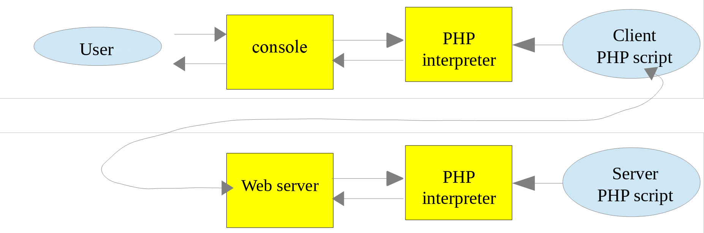
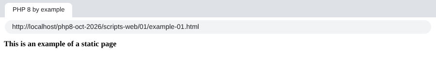
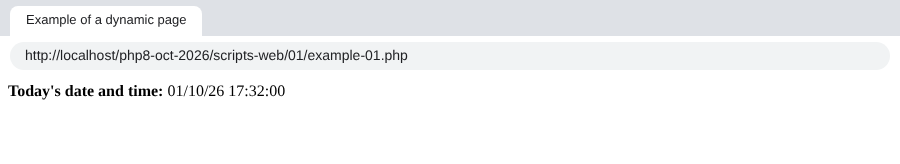
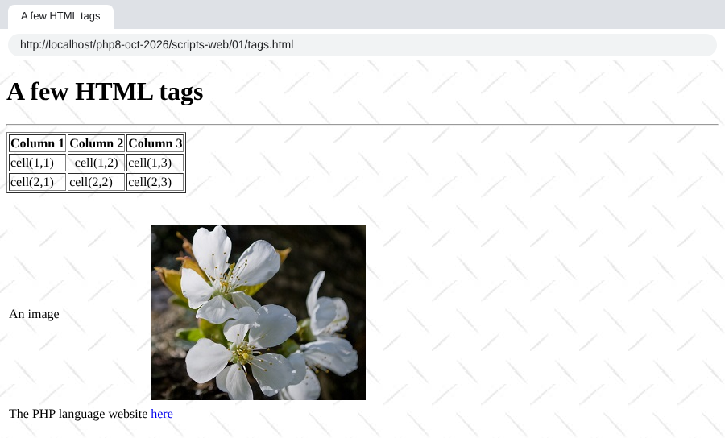
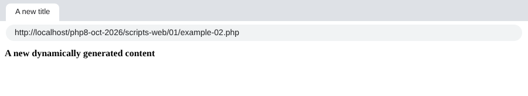
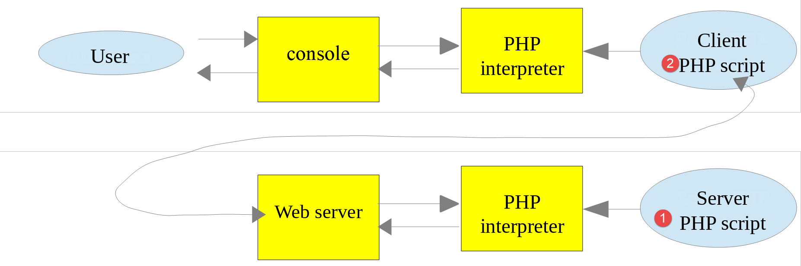
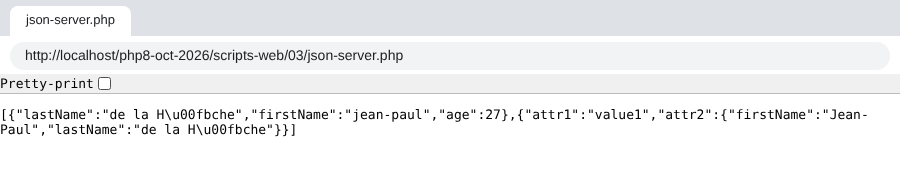
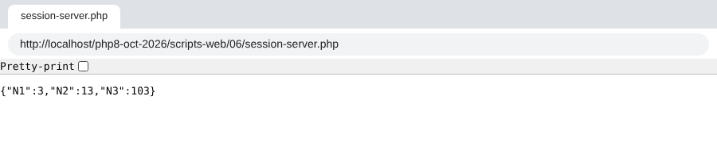

17. Webservices
Hinweis: Unter „Webservice“ verstehen wir hier jede Webanwendung, die Rohdaten liefert, die von einem Client verarbeitet werden – in den folgenden Beispielen ein Konsolenskript. Uns interessiert keine bestimmte Technologie – etwa REST (REpresentational State Transfer) oder SOAP (Simple Object Access Protocol) –, die Daten in einem klar definierten Format liefern: meist JSON bei REST und XML bei SOAP. Jede dieser Technologien beschreibt genau, wie der Client den Server abfragen muss und welches Format die Antwort des Servers haben muss. In diesem Kurs gehen wir mit der Art der Anfrage des Clients und der Antwort des Servers wesentlich flexibler um. Die geschriebenen Skripte und die verwendeten Werkzeuge ähneln jedoch denen der REST-Technologie.
17.1. Einführung
Da PHP-Programme von einem Webserver ausgeführt werden können, wird ein solches Programm zu einem Serverprogramm, das mehrere Clients bedienen kann. Aus Sicht des Clients entspricht der Aufruf eines Webservices der Anforderung der URL dieses Services. Der Client kann in jeder Sprache geschrieben sein, auch in PHP. Außerdem müssen wir wissen, wie man mit einem Webservice „kommuniziert“, das heißt, wir müssen das HTTP-Kommunikationsprotokoll zwischen einem Webserver und seinen Clients verstehen. Das war das Thema des vorherigen Kapitels, das uns einen Teil dieses Protokolls vorgestellt hat.

In ihrer einfachsten Form laufen die Client-Server-Austausche wie folgt ab:
- Der Client öffnet eine Verbindung zu Port 80 des Webservers;
- der Client sendet eine Anforderung für ein Dokument;
- der Webserver sendet das angeforderte Dokument und schließt die Verbindung;
- der Client schließt dann die Verbindung.
Das Dokument kann verschiedenen Typs sein: Text im HTML-Format, ein Bild, ein Video usw. Es kann ein vorhandenes Dokument (statisches Dokument) oder ein von einem Skript dynamisch erzeugtes Dokument (dynamisches Dokument) sein. Im letzteren Fall spricht man von Webprogrammierung. Das Skript zur dynamischen Erzeugung von Dokumenten kann in verschiedenen Sprachen geschrieben sein: PHP, Python, Java, JavaScript, C#, Ruby …
Im Folgenden verwenden wir PHP-Skripte, um Textdokumente dynamisch zu erzeugen.

- In [1] baut der Client eine Verbindung zum Server auf, fordert ein PHP-Skript an und sendet diesem Skript gegebenenfalls Parameter;
- In [2] lässt der Webserver das PHP-Skript vom PHP-Interpreter ausführen. Das Skript erzeugt ein Dokument, das an den Client gesendet wird [3];
- Der Server schließt die Verbindung. Der Client tut dasselbe.
Der Webserver kann mehrere Clients gleichzeitig bedienen.
Bei [Laragon] ist der Webserver [Apache], ein Open-Source-Server der Apache Foundation (https://httpd.apache.org). In den folgenden Anwendungen muss [Laragon] gestartet und müssen seine Dienste gestartet sein (die Schaltfläche [Start All] im Fenster [Laragon]). Dadurch werden der Webserver [Apache] sowie das DBMS [MySQL] gestartet. Der Server [Apache] von [Laragon] führt die PHP-Skripte mit dem Modul [mod_php] der in [Laragon] ausgewählten PHP-Version aus, hier PHP 8.5.
Bisher haben wir PHP-Skripte geschrieben, die in einem Konsolenkontext laufen:

Der Benutzer fordert über die Konsole (das Terminal von VS Code) die Ausführung eines PHP-Skripts an und erhält dessen Ergebnisse.
In den im Folgenden beschriebenen Client-Server-Anwendungen gilt:
- Das Client-Skript wird in einem Konsolenkontext ausgeführt;
- das Server-Skript wird in einem Webkontext ausgeführt.

Das PHP-Serverskript kann nicht an einer beliebigen Stelle im Dateisystem liegen. Der Webserver sucht nämlich die statischen und dynamischen Dokumente, die er ausliefern soll, an Orten, die durch die Konfiguration festgelegt sind. Die Standardkonfiguration von [Laragon] bewirkt, dass Dokumente im Ordner [<laragon>/www] gesucht werden, wobei [<laragon>] der Installationsordner von [Laragon] ist (zum Beispiel [C:\laragon]). Fordert ein Webclient also ein Dokument D über die URL oder den Pfad [http://localhost/D] an, liefert der Webserver das Dokument D aus dem Pfad [<laragon>/www/D] aus.
Der Codeordner dieses Kurses, [php8-oct-2026], wurde im Ordner [<laragon>/www] abgelegt (siehe das Kapitel zur Installation). Die Serverskripte dieses Kapitels befinden sich im Ordner [php8-oct-2026/scripts-web]. Heißt ein Serverskript [S.php], wird der Webserver mit der URL [http://localhost/php8-oct-2026/scripts-web/S.php] abgefragt. Anschließend wird das Dokument [<laragon>/www/php8-oct-2026/scripts-web/S.php] ausgeliefert.
Die Client-Skripte befinden sich im Ordner [php8-oct-2026/scripts-console/web-clients]. Hier ist die Struktur der beiden Ordner (jeder nummerierte Ordner entspricht einem Abschnitt dieses Kapitels):
Öffnen Sie in VS Code den Ordner [php8-oct-2026] (Menü [File / Open Folder]). Alle Dateien der Web- und Konsolenskripte sind dann im Explorer von VS Code zugänglich, und die Erweiterung [PHP Intelephense] analysiert den Code in beiden. Es muss kein „Webprojekt“ erstellt werden: Für den Server [Apache] ist ein Webskript einfach eine Datei [.php] im Ordner [<laragon>/www].
Die in diesem Kapitel verwendeten HTTP-Clients sind:
- ein Webbrowser (Chrome, Firefox, Edge usw.);
- das Kommandozeilenwerkzeug [curl], das in Windows 11 (und im Terminal von [Laragon]) verfügbar ist. In einem Terminal [PowerShell] müssen Sie [curl.exe] statt [curl] eingeben, weil [curl] in Windows PowerShell ein Alias für den Befehl [Invoke-WebRequest] ist, der andere Optionen hat. In einem Terminal [Command Prompt] (cmd) oder im Terminal von [Laragon] genügt [curl] ;
- PHP-Konsolenskripte, die die Symfony-Bibliothek [HttpClient] verwenden.
Wir verwenden [curl] mit einigen Optionen:
Option | Funktion |
[-i] | zeigt die HTTP-Antwort-Header vor dem Dokument an |
[-v] | ausführlicher Modus: zeigt zusätzlich die von [curl] gesendeten HTTP-Header an |
[-d name=value] | sendet den Parameter über eine POST-Anforderung |
[--data-urlencode "name=value"] | wie oben, wobei der Wert URL-kodiert wird |
[-u login:password] | Authentifizierung [Basic] |
[-c file] / [-b file] | Speichert / sendet die vom Server empfangenen Cookies |
17.2. Eine statische Seite schreiben
Hinweis: Für das weitere Vorgehen muss [Laragon] laufen.
Wir zeigen, wie man eine statische Seite in HTML (HyperText Markup Language) erstellt. In VS Code legen wir den Ordner [scripts-web/01] an und darin die Datei [example-01.html]. In einer leeren HTML-Datei bietet VS Code eine Seitenvorlage an: Geben Sie einfach [!] ein und drücken Sie dann die Taste [Tab] (die Funktion [Emmet] von VS Code). Wir vervollständigen diese Vorlage wie folgt:
- Zeile 6: der Seitentitel;
- Zeile 9: ihr Inhalt.
Lassen wir nun die HTML-Seite vom Server [Apache] von [Laragon] anzeigen. In einem Browser fordern wir die URL [http://localhost/php8-oct-2026/scripts-web/01/example-01.html] an:

- Oben zeigt der Reiter den Seitentitel an, und die Adressleiste zeigt die angeforderte URL;
- darunter steht der Seiteninhalt.
Die angezeigte Seite ist eine statische Seite: Sie können sie im Browser beliebig oft neu laden (F5), und es wird immer derselbe Inhalt angezeigt.
Die meisten Browser ermöglichen den Zugriff auf die zwischen Client und Server ausgetauschten Daten, wie im vorherigen Kapitel beschrieben: Drücken Sie F12, um die Entwicklertools zu öffnen, und wählen Sie dann den Reiter [Network] und laden Sie die Seite neu (F5). Wenn Sie auf das geladene Dokument klicken, sehen Sie den an den Server gesendeten Befehl, die Header der Anforderung des Browsers, die Header der Antwort des Servers und anschließend das empfangene Dokument.
Mit dem Werkzeug [curl] können Sie dieselben Informationen in einem Terminal anzeigen. Mit der Option [-i] zeigt es die HTTP-Header der Serverantwort an, gefolgt vom empfangenen Dokument:
- Zeile 2: die Statuszeile der Antwort: HTTP-Protokollversion, Statuscode [200] und seine Beschreibung [OK];
- Danach folgen die HTTP-Header der Antwort. Dazu gehören insbesondere das Datum der Antwort [Date], die Signatur des Servers [Server], das Datum der letzten Änderung des Dokuments [Last-Modified], seine Größe in Bytes [Content-Length] und sein Typ [Content-Type];
- gefolgt von einer Leerzeile, die die Header vom Dokument trennt;
- und schließlich das von uns erstellte HTML-Dokument. Ein Browser interpretiert diesen Code, um die oben gezeigte Seite anzuzeigen.
17.3. Eine dynamische Seite in PHP erstellen
Wir schreiben nun eine dynamische Seite in PHP. Im Ordner [scripts-web/01] erstellen wir die folgende Datei [example-01.php]:
Kommentare
- Zeile 5: der Seitentitel;
- Zeile 8: Der PHP-Code steht zwischen den Tags [<?php] und [?>]. Alles außerhalb dieser Tags ist HTML;
- Zeile 17: schreibt das aktuelle Datum und die aktuelle Uhrzeit. Die Funktion [time] gibt die Anzahl der Sekunden zurück, die seit dem 1. Januar 1970, 0:00 Uhr UTC, vergangen sind. Die Funktion [date] formatiert diese Zahl gemäß dem Format, das ihr erster Parameter angibt, hier Tag/Monat/Jahr Stunden:Minuten:Sekunden.
Im Grunde schreibt das obige PHP-Skript die aktuelle Uhrzeit in die Konsole. Wird es jedoch von einem Webserver ausgeführt, wird der Ausgabestrom der Anweisung [print] – der normalerweise an die Ausführungskonsole des Skripts geleitet wird – auf die Verbindung zwischen dem Server und seinem Client umgeleitet. In einem Webkontext sendet das obige Skript die aktuelle Uhrzeit daher als Text an den Client – hier einen Browser.
Probieren wir die URL [http://localhost/php8-oct-2026/scripts-web/01/example-01.php] aus:

Dies ist eine dynamische Seite, denn wenn Sie die Seite im Browser mehrmals neu laden (F5), ändert sich ihr Inhalt (die Uhrzeit ändert sich).
Der Browser hat einen HTML-Datenstrom empfangen. Um ihn anzuzeigen, können Sie den Quelltext der Seite im Browser anzeigen (Rechtsklick auf die Seite, Option [View page source] wählen oder Strg+U drücken) oder [curl] verwenden:
- nach der Leerzeile der empfangene HTML-Code. Der PHP-Code ist verschwunden: Er wurde durch den Text ersetzt, den er erzeugt hat, samt Datum und Uhrzeit;
- unter den Headern war der Header [X-Powered-By] bei der Anforderung der statischen Seite nicht vorhanden. Er zeigt an, dass die Antwort des Servers von einem PHP-Skript erzeugt wurde. Die Header [Last-Modified] und [ETag] sind dagegen verschwunden: Das Dokument existiert nicht auf dem Datenträger, sondern wird zum Zeitpunkt der Anforderung erzeugt. Der Header [Content-Length] ist weiterhin vorhanden: Da das Dokument kurz ist, konnte [Apache] es vollständig empfangen, bevor die Header gesendet wurden, und so seine Größe berechnen.
Es ist also wichtig, sich zu merken, dass ein PHP-Skript, das von einem Webserver für einen Browser ausgeführt werden soll, einen HTML-Datenstrom erzeugen muss. Wir werden sehen, dass das Skript auch die HTTP-Header und praktisch alle Elemente der Antwort des Servers erzeugen kann.
17.4. Grundlagen der Sprache HTML
Dieses Kapitel geht nicht auf die Webprogrammierung in PHP ein. Eine MVC-Webanwendung wird später in diesem Kurs entwickelt. Stattdessen konzentriert sich dieses Kapitel auf Webservices: PHP-Seiten, die über einen Webserver Daten an andere PHP-Clients liefern. Dennoch hielten wir es für nützlich, dem Leser einige Grundlagen von HTML an die Hand zu geben.
Ein Webbrowser kann verschiedene Dokumente anzeigen, am häufigsten das HTML-Dokument (HyperText Markup Language). Dabei handelt es sich um formatierten Text mit Tags der Form [<tag>text</tag>]. So zeigt der Text [<b>important</b>] wichtigen Text fett an. Es gibt alleinstehende Tags, etwa das Tag [<hr>], das eine horizontale Linie anzeigt. Wir gehen nicht alle Tags durch, die in einem HTML-Text vorkommen können. Eine gute Referenz ist die Dokumentationsseite von Mozilla: https://developer.mozilla.org/en-US/docs/Web/HTML. Kenntnisse der Sprache HTML sind unerlässlich, da dynamische Webanwendungen den HTML-Code, den sie an Webclients senden, selbst erzeugen müssen.
Kurz gesagt: Sie müssen nicht die gesamte Sprache HTML beherrschen, um mit der Webprogrammierung zu beginnen. Eine Möglichkeit, die Feinheiten der Sprache HTML kennenzulernen, besteht darin, im Web zu surfen und sich den Quelltext von Seiten anzusehen, die interessante Merkmale aufweisen, die Sie noch nicht kennen.
Betrachten wir das folgende Beispiel [tags.html], das einige in einem Webdokument häufig vorkommende Elemente enthält, etwa:
- eine Tabelle;
- ein Bild;
- einen Link.

Ein HTML-Dokument hat im Allgemeinen das folgende Format:
Das gesamte Dokument wird von den Tags [<html>…</html>] umschlossen. Es besteht aus zwei Teilen:
- [<head>…</head>]: Dies ist der nicht angezeigte Teil des Dokuments. Er liefert Informationen für den Browser, der das Dokument anzeigt. Er enthält häufig das Tag [<title>…</title>], das den Text angibt, der im Reiter des Browsers erscheint. Auch andere Tags können vorhanden sein, darunter Tags, die die Schlüsselwörter des Dokuments definieren – Schlüsselwörter, die anschließend von Suchmaschinen verwendet werden. Dieser Teil kann auch in JavaScript geschriebene Skripte enthalten, die vom Browser ausgeführt werden;
- [<body attributes>…</body>]: Dies ist der Teil, der vom Browser angezeigt wird. Die in diesem Teil enthaltenen HTML-Tags teilen dem Browser das „gewünschte“ visuelle Erscheinungsbild des Dokuments mit.
Der HTML-Code unseres Beispieldokuments lautet wie folgt:
Element | HTML-Tags und Beispiele | ||
Dokumenttitel | [<title>A few HTML tags</title>] (Zeile 5): Der Text [A few HTML tags] erscheint im Reiter des Browsers, der das Dokument anzeigt | ||
horizontale Linie | [<hr>]: zeigt eine horizontale Linie an (Zeile 10) | ||
Tabelle | [<table attributes>….</table>]: zur Definition der Tabelle (Zeile 12); [<thead>…</thead>]: zur Definition der Spaltenköpfe ({{L:<thead> | </thead>}}); [<tbody>…</tbody>]: zur Definition des Tabelleninhalts ({{L:<tbody> | </tbody>}}); [<tr attributes>…</tr>]: zur Definition einer Zeile (Zeile 21); [<td attributes>…</td>]: zur Definition einer Zelle (Zeile 22); Beispiele: [<table border="1">…</table>]: Das Attribut [border] legt die Stärke des Tabellenrahmens fest; [<td style="text-align: center;">cell(1,2)</td>] (Zeile 23): definiert eine Zelle, deren Inhalt [cell(1,2)] lautet. Dieser Inhalt wird horizontal zentriert ([text-align: center]) |
Bild | [<img src="images/cherry-tree.jpg" alt="a cherry tree">] (Zeile 37): definiert ein Bild, dessen Quelldatei [images/cherry-tree.jpg] auf dem Webserver liegt. Das Attribut [alt] liefert einen Alternativtext, der angezeigt wird, wenn das Bild nicht angezeigt werden kann. Dieses Tag steht in einem Webdokument, das über die URL [http://localhost/php8-oct-2026/scripts-web/01/tags.html] erzeugt wird. Der Browser fordert daher die URL [http://localhost/php8-oct-2026/scripts-web/01/images/cherry-tree.jpg] an, um das hier referenzierte Bild abzurufen | ||
Link | [<a href="https://www.php.net/">here</a>] (Zeile 41): bewirkt, dass der Text [here] als Link auf die URL [https://www.php.net/] dient | ||
Seitenhintergrund | [<body style="background-image: url(images/standard.jpg)">] (Zeile 8): gibt an, dass das als Seitenhintergrund zu verwendende Bild unter der URL [images/standard.jpg] auf dem Webserver liegt. Im Kontext unseres Beispiels fordert der Browser die URL [http://localhost/php8-oct-2026/scripts-web/01/images/standard.jpg] an, um dieses Hintergrundbild abzurufen |
Dieses einfache Beispiel zeigt, dass der Browser drei Anforderungen an den Server senden muss, um das gesamte Dokument aufzubauen:
- [http://localhost/php8-oct-2026/scripts-web/01/tags.html] , um den HTML-Quelltext des Dokuments abzurufen;
- [http://localhost/php8-oct-2026/scripts-web/01/images/cherry-tree.jpg] , um das Bild [cherry-tree.jpg] abzurufen;
- [http://localhost/php8-oct-2026/scripts-web/01/images/standard.jpg] , um das Hintergrundbild [standard.jpg] abzurufen.
Das zeigt der Reiter [Network] der Entwicklertools des Browsers (F12): Er zeigt die drei vom Browser gesendeten Anforderungen an.
Hinweis: Unter Windows wird bei Dateinamen nicht zwischen Groß- und Kleinschreibung unterschieden: [Cherry-tree.jpg] und [cherry-tree.jpg] bezeichnen dieselbe Datei. Auf einem Linux-Server, auf dem die meisten Websites gehostet werden, ist das nicht so. Sie sollten sich daher angewöhnen, Dateinamen genau so zu schreiben, wie sie auf dem Datenträger stehen, auch in URLs.
17.5. Eine statische Seite dynamisch machen
Zeigen wir, wie sich die HTML-Seite [example-01.html] dynamisch machen lässt. Kopieren wir ihren Inhalt in eine Datei namens [page-00.php]. Dieses PHP-Skript enthält kein PHP, sondern nur HTML. Fordern wir es vom Server an:
Der PHP-Interpreter hat das Skript [page-00.php] verarbeitet und dieselbe HTML-Ausgabe erzeugt wie die statische Seite [example-01.html]. Das lehrt uns eines: Findet der PHP-Interpreter in einem PHP-Skript HTML, lässt er es unangetastet und sendet es unverändert an den Client.
Fügen wir nun dem folgenden Skript [page-01.php] einige PHP-Anweisungen hinzu, damit der PHP-Interpreter etwas zu tun hat:
- Zeilen 4 und 9: Wir haben PHP-Code hinzugefügt, der den Titel und den Inhalt der Seite dynamisch erzeugt. Hier gehen wir davon aus, dass die Variable [$page] ein Objekt mit den anzuzeigenden Daten ist. Das Tag [<?= expression ?>] ist eine Kurzform für [<?php print expression ?>]. Es ist für diese Art von Seiten gedacht: HTML mit einigen von PHP berechneten Werten.
Wenn wir dieses Skript direkt aufrufen, erhalten wir das folgende Ergebnis:
- Zeilen 5–8: Der Seitentitel konnte nicht berechnet werden, weil die Variable [$page] nicht definiert war. PHP hat zwei Warnmeldungen in den HTML-Datenstrom eingefügt: Die Variable [$page] existiert nicht, und die Eigenschaft [title] von [null] kann nicht gelesen werden;
- Zeilen 14–17: dasselbe Problem beim Inhalt.
Hinweis: Ab PHP 8.0 löst die Verwendung einer nicht definierten Variablen und das Lesen einer Eigenschaft von [null] eine Warnung [Warning] statt wie in PHP 7 nur einen Hinweis [Notice] aus. Die Meldungen werden auf der Seite angezeigt, weil die PHP-Konfiguration von [Laragon] eine Entwicklungskonfiguration ist ([display_errors=On]). Auf einem Produktionsserver verwendet man [display_errors=Off], und Fehler werden in eine Logdatei geschrieben.
Schreiben wir nun das folgende Webskript [example-02.php]:
- Zeile 3: Wie alle PHP-Skripte in diesem Kurs verlangt dieses Skript strikte Typprüfung;
- Zeilen 6–8: Wir definieren das Objekt [$page]. Die vordefinierte Klasse [stdClass] ist die einzige Klasse (neben den mit dem Attribut [#[\AllowDynamicProperties]] gekennzeichneten Klassen), der noch ohne Warnung nicht deklarierte Eigenschaften hinzugefügt werden können: Ab PHP 8.2 ist das Erzeugen dynamischer Eigenschaften bei Objekten anderer Klassen veraltet;
- Zeile 10: Das Skript [page-01.php] wird eingebunden. Der Code dieses Skripts wird dann interpretiert:
- Die Variable [$page] ist nun definiert, und der PHP-Interpreter verwendet sie;
- der HTML-Code aus [page-01.php] wird unverändert an den Client gesendet;
- die Ergebnisse der Ausdrücke in [<?= … ?>] werden in den an den Client gesendeten Textstrom eingefügt.
Wenn wir nun das Webskript [example-02.php] anfordern, erhalten wir im Browser Folgendes:

Und hier ist der vom Browser empfangene Text:
- Zeilen 5 und 10: Die PHP-Codes und [page-01.php] wurden durch die Werte der Ausdrücke [$page->title] und [$page->contents] ersetzt.
Aus diesem Beispiel lassen sich zwei wesentliche Punkte mitnehmen:
- Die für den Browser bestimmten HTML-Seiten lassen sich in PHP-Skripten isolieren, die nur diesen HTML-Code und einige von PHP-Code erzeugte dynamische Teile enthalten. In diesen Seiten sollte so wenig PHP wie möglich stehen;
- die gesamte Logik, die die in die HTML-Seiten eingefügten dynamischen Daten erzeugt, muss in reinen PHP-Skripten isoliert werden, die keinen Code zur Seitendarstellung (HTML, CSS, JavaScript …) enthalten.
Das ermöglicht eine Aufgabentrennung:
- die Aufgabe, die anzuzeigenden Webseiten zu erzeugen (HTML, CSS, JavaScript …);
- die Aufgabe, die Logik der zu entwickelnden Webanwendung zu implementieren. Diese Logik kann in einer Schichtenarchitektur umgesetzt werden, genau wie bei den Konsolenskripten.
Hinweis: Ein in eine HTML-Seite eingefügter Wert sollte normalerweise durch die Funktion [htmlspecialchars] geschützt werden, die die Sonderzeichen von HTML ([<], [>], [&], ["]) durch ihre HTML-Codes ersetzt. Andernfalls würde ein von einem Benutzer gelieferter Wert, der zum Beispiel ein Tag wie [<script>] enthält, vom Browser ausgeführt (XSS-Schwachstelle). Wir kommen darauf zurück, wenn wir HTML-Seiten schreiben.
Als Nächstes erstellen wir spezielle Webskripte:
- Sie senden nur Daten an den Client und keine Formatierung (HTML, CSS, JavaScript). Es handelt sich daher eher um Datenserver als um Webseiten;
- die Clients dieser Webskripte sind Konsolenskripte, die die vom Server gesendeten Daten abrufen und verarbeiten.
17.6. Client-Server-Anwendung für Datum und Uhrzeit
Wir betrachten nun die folgende Konfiguration:

Wir schreiben:
- ein Webskript [1], das das aktuelle Datum und die aktuelle Uhrzeit an seinen Client sendet;
- ein Konsolenskript [2] , das als Client des Webskripts fungiert: Es ruft das vom Webskript gesendete Datum und die Uhrzeit ab und zeigt sie in der Konsole an.
17.6.1. Das serverseitige Skript
Wir haben bereits ein Webskript geschrieben, das das aktuelle Datum und die aktuelle Uhrzeit erzeugt: das Skript [example-01.php] aus dem vorherigen Abschnitt. Wir hatten erwähnt, dass wir Datenserver schreiben werden: Rohdaten ohne Formatierung (HTML). Das Serverskript [date-time-server.php] sieht daher wie folgt aus:
- Zeile 6: Die Datumsfunktionen verwenden die Zeitzone, die durch die Direktive [date.timezone] in der Datei [php.ini] festgelegt ist. Um nicht von der Serverkonfiguration abzuhängen, legt das Skript die Zeitzone selbst fest – hier Paris;
- Zeile 8: Die Funktion [header] fügt der Antwort einen HTTP-Header hinzu. Hier wird der HTTP-Header [Content-Type] gesetzt, der dem Client mitteilt, welcher Art das Dokument ist, das er erhalten wird. Bei der Seite [example-01.php] lautete der Header [Content-Type] [text/html; charset=UTF-8]. Hier teilen wir dem Client mit, dass das Dokument reiner Text (nicht HTML) ist. Für unseren Konsolenclient, der diesen Header nicht auswerten wird, ist das unerheblich. Wichtiger ist es für Webbrowser, die diesen Header sehr wohl verwenden. Die HTTP-Header stehen in der Antwort des Servers vor dem Dokument: Die Funktion [header] muss daher aufgerufen werden, bevor das Skript etwas geschrieben hat;
- Zeile 19: das an den Client gesendete Dokument: das Datum und die Uhrzeit, ohne HTML-Tag.
Fordern wir dieses Skript mit einem Browser an:

Der Browser zeigt den empfangenen reinen Text an. Mit [curl] sehen wir den vom Skript gesetzten HTTP-Header [Content-Type] und nach der Leerzeile das empfangene Textdokument:
17.6.2. Das clientseitige Skript
Im vorherigen Kapitel haben wir mehrere HTTP-Clients geschrieben. Wir könnten sie verwenden, um das vom Serverskript [date-time-server.php] gesendete Textdokument abzurufen. Das tun wir jedoch nicht. Wie schon bei den Protokollen SMTP und IMAP verwenden wir eine Drittanbieter-Bibliothek, genauer gesagt die Komponente [HttpClient] des Symfony-Frameworks, deren Dokumentation unter der URL https://symfony.com/doc/current/http_client.html zu finden ist.
Wie die vorherigen Bibliotheken wird die Komponente [HttpClient] mit dem Werkzeug [Composer] installiert. In einem im Ordner [php8-oct-2026] geöffneten Terminalfenster würde der Befehl lauten:
Das ist hier nicht nötig: Die Datei [composer.json] im Ordner [php8-oct-2026] deklariert diese Abhängigkeit (in Version 8) bereits, ebenso die der Komponente [HttpFoundation], die wir bald verwenden werden. Der bei der Installation der Kursdateien ausgeführte Befehl [composer install] hat sie im Ordner [php8-oct-2026/vendor] installiert.
Das Konsolenskript [date-time-client.php] verarbeitet die folgende JSON-Datei [config-date-time-client.json]:
- Zeile 2: die URL des Serverskripts.
Das clientseitige Skript [date-time-client.php] sieht wie folgt aus:
Kommentare
- Zeile 8: Wie bei den vorherigen Bibliotheken laden wir die von [vendor/autoload.php] erzeugte Datei [Composer]. Ihr Pfad wird anhand der Konstante [__DIR__] berechnet, die den Ordner des Skripts angibt: Das Skript funktioniert unabhängig vom Speicherort des Ordners [php8-oct-2026];
- Zeile 10: Wir deklarieren die Klasse [HttpClient], die wir verwenden werden;
- Zeile 11: Die Schnittstelle [ExceptionInterface] wird von allen Exceptions implementiert, die der HTTP-Client von Symfony auslösen kann;
- Zeile 14: Der Name der Konfigurationsdatei kann dem Skript als Argument übergeben werden: [php date-time-client.php other-config.json]. Andernfalls wird die Datei [config-date-time-client.json] verwendet. Das Array [$argv] enthält die Kommandozeilenargumente, wobei [$argv[0]] der Name des Skripts ist. Der Operator [??] gibt seinen linken Operanden zurück, wenn dieser existiert und nicht [null] ist; andernfalls gibt er seinen rechten Operanden zurück;
- Zeilen 17–25: Die Konfiguration des Skripts wird in das Array [$config] geladen. Der benannte Parameter [flags: JSON_THROW_ON_ERROR] weist [json_decode] an, bei fehlerhaftem JSON eine Exception [JsonException] auszulösen, statt stillschweigend [null] zurückzugeben;
- Zeile 29: Ein HTTP-Client wird erstellt. Die statische Methode [create] wählt die am besten geeignete Implementierung aus: hier die Klasse [CurlHttpClient], die die PHP-Erweiterung [curl] verwendet;
- Zeile 33: Die URL des Serverskripts wird mit einem Befehl GET angefordert: [GET URL HTTP/1.1]. Diese Operation ist asynchron: Die Ausführung wird mit der nächsten Zeile fortgesetzt, ohne auf die Antwort zu warten;
- Zeile 35: Der Statuscode der Antwort wird abgerufen. Er steht in der ersten Zeile der Antwort des Servers. Lautet diese Zeile also [HTTP/1.1 200 OK], ist der Status der Antwort 200. Diese Operation ist blockierend: Die Ausführung wird erst fortgesetzt, wenn der Client die Header der Antwort des Servers erhalten hat;
- Zeile 39: Wir rufen die HTTP-Antwort-Header ab. Wir erhalten ein assoziatives Array, dessen Schlüssel die Namen der Header (in Kleinbuchstaben) und dessen Werte Arrays sind: Ein und derselbe Header kann in einer Antwort nämlich mehrfach vorkommen. Hier zeigen wir den ersten Wert jedes Headers an;
- Zeile 43: Wir rufen das vom Server zurückgegebene Dokument ab; wir wissen, dass es sich um Text handelt;
- Zeile 46: Tritt ein Fehler auf, wird die Fehlermeldung angezeigt. Das PHP-7-Skript fing die Exceptions [TypeError | RuntimeException] ab; präziser ist es, die HTTP-Client-Exceptions abzufangen, die alle [ExceptionInterface] implementieren. Beachten Sie, dass [getHeaders] und [getContent] eine Exception auslösen, wenn der Statuscode der Antwort einen Fehler anzeigt (Codes 300 bis 599). Darauf gehen wir im Abschnitt über die Authentifizierung ein.
Der Client läuft in einem Terminal im geöffneten Verzeichnis ([Laragon] muss laufen, damit das Serverskript erreichbar ist):
Das aktuelle Datum und die aktuelle Uhrzeit werden in der letzten Zeile korrekt abgerufen. Die angezeigten Header sind dieselben, die wir mit [curl] gesehen haben, mit Namen in Kleinbuchstaben.
Sie sind vielleicht neugierig, was das Client-Skript an den Server gesendet hat. Im vorherigen Kapitel haben wir dafür einen generischen TCP-Server verwendet, der die empfangenen Textzeilen anzeigt. Hier schreiben wir einen kleinen TCP-„Spion“-Server, [spy-server.php], der dasselbe tut und anschließend eine minimale HTTP-Antwort an den Client zurücksendet:
- Zeile 9: Der Listening-Port wird als Argument übergeben; der Standardwert ist 100;
- Zeile 11: erstellt einen TCP-Dienst auf dem Port [port] des lokalen Rechners;
- Zeile 18: Warten auf einen Client;
- Zeile 27: liest die empfangenen Zeilen bis zur leeren Zeile, die die HTTP-Header beendet, und zeigt sie an. Dabei merkt er sich den Wert des Headers [Content-Length], der die Größe des Dokuments angibt, das möglicherweise auf die Header folgt;
- Zeilen 40–41: lesen dieses Dokument und zeigen es an;
- Zeilen 45–50: Senden einer minimalen HTTP-Antwort: Statuszeile, Header, leere Zeile, Dokument;
- Zeile 52: Schließen der Verbindung zum Client, damit dieser erkennt, dass er die gesamte Antwort erhalten hat.
Wir starten den Spion-Server im ersten Terminal:
Die Konfigurationsdatei [config-spy.json] gibt Port 100 auf dem lokalen Rechner an:
Dieses Mal kontaktiert der Client den Server [localhost] auf Port 100. Unser Spion-Server wird daher die Anforderung bearbeiten. In einem zweiten Terminal führen wir den Client mit dieser Konfiguration aus:
- Zeile 7: Der Client hat das vom Spion-Server gesendete Dokument erfolgreich empfangen.
Im ersten Terminal hat der Spion-Server angezeigt, was er empfangen hat:
- Zeile 5: Der vom Client-Skript erzeugte HTTP-Befehl GET;
- Zeile 6: Der Header [Host] gibt den Zielrechner und den Port an;
- Zeile 8: die Signatur des Symfony-Clients [HttpClient];
- Zeile 9: Der Client gibt an, dass er eine komprimierte Antwort im Format [gzip] akzeptiert;
- Zeile 10: die leere Zeile, die die Header beendet. Eine GET-Anforderung enthält kein Dokument.
17.6.3. Das Serverskript – Version 2
Standardmäßig sind die Funktionen zum Schreiben eines Webskripts nicht objektorientiert. Auf der Serverseite führt das dazu, dass Klassen und herkömmliche PHP-Funktionen vermischt werden. Um einen einheitlicheren Codierstil zu erreichen, verwenden wir die Bibliothek [HttpFoundation] aus dem Symfony-Framework. Sie kapselt alle Standardfunktionen von PHP für ein Webskript in einem System aus Klassen und Schnittstellen: Die Klasse [Request] repräsentiert die Anforderung des Clients, und die Klasse [Response] repräsentiert die Antwort des Servers. Die Dokumentation der Bibliothek finden Sie unter https://symfony.com/doc/current/components/http_foundation.html.
Wie [HttpClient] ist auch die Bibliothek [HttpFoundation] (Version 8) bereits im Ordner [vendor] installiert. Sie wurde vermutlich mit dem folgenden Befehl installiert:
Die zweite Version des Servers [date-time-server-2.php] sieht wie folgt aus:
Kommentare
- Zeile 8: Laden der von [Composer] installierten Bibliotheken. Das Skript liegt im Ordner [scripts-web/02]: Der Ordner [vendor] liegt zwei Ebenen darüber;
- Zeile 10: Die Klasse [Response] der Bibliothek [HttpFoundation] übernimmt die gesamte Antwort an die Clients des Webservices;
- Zeilen 16–20: Erstellung der Antwort. Der Konstruktor der Klasse [Response] hat drei Parameter: das an den Client gesendete Dokument (hier das Datum und die Uhrzeit), den Statuscode der Antwort (hier die Konstante [Response::HTTP_OK], die 200 ist) und ein Array von HTTP-Headern. Wir verwenden die benannten Argumente von PHP 8.0 ([content:], [status:], [headers:]): Sie machen den Aufruf lesbarer und machen es überflüssig, die Reihenfolge der Parameter einzuhalten;
- Zeile 22: Die Antwort ist UTF-8-Text. [HttpFoundation] ergänzt [charset=UTF-8] im Header [Content-Type];
- Zeile 25: Die Antwort wird an den Client gesendet: die Statuszeile, die Header und dann das Dokument. Die Methode [send] verwendet die Funktionen [http_response_code], [header], und [print], die wir sonst selbst verwendet hätten.
Mit [curl]:
- Zeile 2: Antwortcode 200;
- der Header [Cache-Control] wurde von [HttpFoundation] hinzugefügt. Er gibt an, dass die Antwort nicht von einer Zwischenstelle (einem Proxy) zwischengespeichert werden darf;
- der Header [Content-Type] ist der vom Skript gesetzte, ergänzt um den Zeichensatz;
- Die letzte Zeile ist das Dokument.
17.6.4. Das Client-Skript – Version 2
Das Client-Skript bleibt unverändert. Es erhält lediglich eine andere Konfigurationsdatei, [config-date-time-client-2.json]:
Die Ergebnisse sind dieselben wie in Version 1:
17.7. Ein JSON-Datenserver
Die Antwort eines Webskripts kann aus mehreren Datenelementen bestehen, die in Arrays und Objekten organisiert sein können. Das Skript kann diese verschiedenen Elemente dann in einem JSON-String senden, den der Client dekodiert.
17.7.1. Das serverseitige Skript
Das Skript [json-server.php] verwendet die folgende Klasse [Person]:
Kommentare
- Zeile 5: Die Klasse gehört zum Namensraum [Models]
- Zeile 7: Die Klasse implementiert die PHP-Schnittstelle [JsonSerializable]. Dadurch muss sie die Methode [jsonSerialize] implementieren (Zeilen 39–43). Die Methode muss einen Wert zurückgeben, der in JSON serialisiert wird, hier ein assoziatives Array. Wird der Ausdruck [json_encode($person)] verwendet, prüft die Funktion [json_encode] , ob die Klasse [Person] die Schnittstelle [JsonSerializable] implementiert. Falls ja, wird der Ausdruck zu [json_encode($person->jsonSerialize())];
- Zeilen 11–15: Der Konstruktor verwendet die Property Promotion von PHP 8.0: Jeder Parameter, dem ein Sichtbarkeitsmodifizierer vorangestellt ist, deklariert eine Eigenschaft und initialisiert sie. Alle drei Parameter haben einen Standardwert;
- Zeile 12: asymmetrische Sichtbarkeit, eingeführt mit PHP 8.4: Die Eigenschaft ist von überall lesbar ([public]), kann aber nur innerhalb der Klasse geändert werden ([private(set)]). Wir können also [$person->lastName] zum Lesen ohne Getter schreiben, nicht aber [$person->lastName = "x"] außerhalb der Klasse. Bei PHP 7 im Jahr 2019 mussten wir private Eigenschaften deklarieren und für jede einen Getter schreiben;
- Zeilen 19–22: ein Konstruktor (auch Factory genannt) für ein Objekt [Person] auf Basis eines assoziativen Arrays. Der Ausdruck [new static(...$assoc)] übergibt die Elemente des Arrays an den Konstruktor. Seit PHP 8.1 akzeptiert der Operator [...] Arrays mit String-Schlüsseln: Jeder Schlüssel wird zu einem benannten Argument. So ist [Person::fromArray(["lastName" => "x", "age" => 3])] gleichbedeutend mit [new Person(lastName: "x", age: 3)]. Ein Schlüssel, der kein Konstruktorparameter ist, verursacht einen Fehler. Die PHP-7-Version der Klasse kopierte die Elemente des Arrays in Eigenschaften mit beliebigen Namen, wodurch dynamische Eigenschaften entstehen konnten – ein Feature, das seit PHP 8.2 veraltet ist;
- Zeilen 26–29: der einzige Setter der Klasse. Er gibt das Objekt selbst zurück (Rückgabetyp [static]), was verkettete Aufrufe ermöglicht;
- Zeile 43: Die Funktion [get_object_vars] gibt das assoziative Array [property => value] des Objekts zurück;
- Zeile 47: Die statische Funktion [jsonUnserialize] ermöglicht es, aus dem JSON-String ein Objekt [Person] zu erstellen.
Das Skript [json-server.php] sieht wie folgt aus:
Kommentare
- Zeilen 7 und 9: Die Klasse [Person] wird importiert;
- Zeile 13: Ein Objekt [Person] wird mit benannten Argumenten erstellt;
- Zeilen 15–21: Ein zweistufiges assoziatives Array wird erstellt;
- Zeile 24: Das an den Client gesendete Dokument ist der JSON-String eines Arrays:
- das Element [$person] wird mit seiner Methode [jsonSerialize] in JSON serialisiert;
- das Element [$assoc] wird nativ in JSON serialisiert;
- die Option [JSON_THROW_ON_ERROR] bewirkt, dass [json_encode] im Fehlerfall (zum Beispiel bei einem String, der nicht in UTF-8 vorliegt) eine Exception auslöst, statt [false] zurückzugeben;
- Zeile 25: Sie gibt an, dass das Dokument vom Typ [application/json] ist. Beim Empfang dieses Headers stellen Browser den JSON-String dar.
Wenn Sie dieses Skript mit einem Browser (hier Chrome) anfordern, erhalten Sie die folgende Antwort:

Beachten Sie die Kodierung der Umlaute und Akzentzeichen: Standardmäßig ersetzt [json_encode] jedes Zeichen, das kein ASCII-Zeichen ist, durch seine Unicode-Sequenz [\uXXXX] ([û] wird zu [\u00fb]). Das Feld [Pretty-print] in Chrome zeigt das eingerückte JSON an. Mit [curl]:
- der Header [Content-Type] gibt den Dokumenttyp als [application/json] an;
- die letzte Zeile ist der empfangene JSON-String.
17.7.2. Der Client
Der Client [json-client.php] wird durch die folgende JSON-Datei konfiguriert: [config-json-client.json]:
Er verwendet eine Kopie der Klasse [Person] des Servers, die in seinem Ordner liegt. Das Skript [json-client.php] sieht wie folgt aus:
Kommentare
- Zeilen 9 und 11: Import der Klasse [Person];
- Zeile 16: Dieser Client verwendet immer dieselbe Konfigurationsdatei, deren Name eine Konstante ist;
- Zeile 31: Erstellung des HTTP-Clients;
- Zeile 45: Die Methode [toArray] der Antwort dekodiert das empfangene JSON-Dokument und gibt das entsprechende PHP-Array zurück. Sie löst eine Exception aus, wenn das Dokument nicht vom Typ JSON ist. Wir wissen, dass ein Array mit zwei Elementen kodiert wurde. Die Zuweisung durch Zerlegung [[$person, $assoc] = …] (auch Destructuring genannt) weist diese beiden Elemente zwei Variablen zu. Sie ersetzt die alte Syntax [list($person, $assoc) = …];
- Zeile 47: Aus dem Array seiner Eigenschaften wird ein Objekt [Person] erstellt, das später angezeigt wird (Zeile 50). Das Objekt wird mit seiner Methode [__toString] in einen String umgewandelt;
- Zeile 51: Das zweite assoziative Array wird angezeigt. Die Anweisung [print] kann keine Arrays anzeigen. Daher wird dieses Array mit JSON in einen String umgewandelt. Um Umlaute und Akzentzeichen unverändert zu erhalten, muss die Option [JSON_UNESCAPED_UNICODE] hinzugefügt werden. Wir haben gesehen, dass die Umlaute und Akzentzeichen ohne diese Option im JSON-String kodiert werden.
Die Ausführung des clientseitigen Skripts liefert die folgenden Ergebnisse:
In den letzten beiden Zeilen wurden die Umlaute und Akzentzeichen korrekt abgerufen.
17.8. Umgebungsvariablen vom Webservice abrufen
Ein serverseitiges Skript läuft in einer Webumgebung, auf die es zugreifen kann. Diese Umgebung ist im Array [$_SERVER] gespeichert, einer globalen Variablen von PHP. Wenn wir die Bibliothek [HttpFoundation] verwenden, befindet sich diese Umgebung in der Eigenschaft [server] des Objekts [Request], das die vom Webskript verarbeitete HTTP-Anforderung darstellt.
17.8.1. Das serverseitige Skript
Wir schreiben eine Serveranwendung, die ihre Ausführungsumgebung an ihre Clients sendet. Das Webskript [env-server.php] sieht wie folgt aus:
- Zeile 12: Wir erstellen ein Objekt vom Typ [Request] , das alle verfügbaren Informationen über die vom Webskript empfangene HTTP-Anforderung sowie über seine Ausführungsumgebung kapselt. Die statische Methode [createFromGlobals] erstellt dieses Objekt aus den globalen Variablen von PHP: [$_GET], [$_POST], [$_COOKIE], [$_FILES] und [$_SERVER];
- Zeile 15: Die an den Client gesendete Information ist der JSON-String des Objekts [$request->server], das die Laufzeitumgebung des Webskripts darstellt. Es ist ein Objekt vom Typ [ServerBag], eine Art Dictionary. [$request->server->all()] ist dagegen ein echtes assoziatives Array – der Inhalt von [ServerBag]. Ohne [HttpFoundation] hätten wir [json_encode($_SERVER)] geschrieben. Die Option [JSON_UNESCAPED_SLASHES] verhindert, dass die Zeichen [/] in den Pfaden als [\/] kodiert werden;
- Zeile 20: Die Antwort wird gesendet.
Wenn Sie dieses Skript mit einem Browser anfordern, zeigt er das JSON-Dictionary der Umgebungsvariablen an.
17.8.2. Das Client-Skript
Das Client-Skript [env-client.php] wird durch die folgende JSON-Datei konfiguriert: [config-env-client.json]:
- Zeile 2: die URL des Serverskripts;
- Zeilen 3–9: die Namen der Umgebungsvariablen, die der Client anzeigt. Ohne diesen Schlüssel zeigt er alle an.
Das Client-Skript [env-client.php] sieht wie folgt aus:
Kommentare
- Zeile 43: Die JSON-Antwort des Servers wird dekodiert. Das ergibt ein assoziatives Array;
- Zeilen 45–46: Die Umgebung ist umfangreich. Enthält die Konfigurationsdatei eine Liste von Variablennamen ([display]), werden nur diese Namen beibehalten. Die Funktion [array_filter] behält die Elemente eines assoziativen Arrays bei, für die die als Parameter übergebene Funktion [true] zurückgibt. Mit der Option [ARRAY_FILTER_USE_KEY] erhält diese Funktion statt des Werts den Schlüssel des Elements;
- Zeilen 48–49: Alle Werte dieses assoziativen Arrays werden angezeigt.
Es ergibt sich die folgende Konsolenausgabe (der Pfad zum Ordner [php8-oct-2026] ist zu [.../php8-oct-2026] abgekürzt):
Hier ist die Bedeutung dieser Variablen sowie einiger weiterer, die der Server ebenfalls sendet:
Variable | Bedeutung |
HTTP_HOST | Der Wert „xxx“ des HTTP-Headers [Host: xxx] , vom Client gesendet |
HTTP_USER_AGENT | der Wert xxx des HTTP-Headers [User-Agent: xxx] , vom Client gesendet |
HTTP_ACCEPT_ENCODING | Der Wert xxx des HTTP-Headers [Accept-Encoding: xxx] , vom Client gesendet |
PATH | der Pfad zu den ausführbaren Dateien auf dem Rechner, auf dem das Serverskript läuft |
SERVER_SIGNATURE | die Signatur des Webservers, die [Apache] den von ihm selbst erzeugten Seiten (Fehlerseiten, Dateilisten) hinzufügt |
SERVER_SOFTWARE | der Typ des Webservers |
SERVER_NAME | der Hostname des Webservers |
SERVER_PORT | Port, auf dem der Webserver lauscht |
SERVER_ADDR | die IP-Adresse des Rechners, auf dem der Webserver läuft |
REMOTE_ADDR | die IP-Adresse des Clients. In diesem Fall befand sich der Client auf demselben Rechner wie der Server |
REMOTE_PORT | der Port, von dem aus der Client seine Anfrage gesendet hat |
DOCUMENT_ROOT | die Wurzel des Verzeichnisbaums der Dokumente, die der Webserver ausliefert, [<laragon>/www] bei Verwendung von [Laragon] |
REQUEST_SCHEME | das Protokoll der angeforderten URL: [http] oder [https] |
SERVER_ADMIN | die E-Mail-Adresse des Webserver-Administrators |
SCRIPT_FILENAME | Der vollständige Pfad zum Serverskript |
SERVER_PROTOCOL | die Version des HTTP-Protokolls, die der Webserver verwendet |
REQUEST_METHOD | Die HTTP-Methode, die der Client verwendet: GET, POST, PUT, DELETE … |
QUERY_STRING | In der URL gesendete Parameter: GET /url?parameters |
REQUEST_URI | die vom Client angeforderte URL. Fordert der Client die URL [http://machine:port/uri] an, so gilt REQUEST_URI=/uri |
SCRIPT_NAME | der Pfad zum Skript ab der Server-Wurzel: [$_SERVER['SCRIPT_FILENAME']] = [$_SERVER['DOCUMENT_ROOT'] . $_SERVER['SCRIPT_NAME']] |
REQUEST_TIME_FLOAT | der Zeitpunkt der Anfrage in Sekunden seit dem 1. Januar 1970, mit Mikrosekundengenauigkeit |
17.9. Abruf der von einem Client gesendeten Parameter durch den Server
17.9.1. Einführung
Im HTTP-Protokoll hat ein Client zwei Möglichkeiten, Parameter an den Webserver zu übergeben:
- Er fordert die URL des Dienstes in der Form an
wobei die [vali]-Werte zuvor codiert werden müssen, damit bestimmte reservierte Zeichen durch ihre hexadezimalen Werte ersetzt werden;
- er fordert die URL des Dienstes in der Form an
anschließend fügt er unter den an den Server gesendeten HTTP-Headern den folgenden Header ein:
Die übrigen vom Client gesendeten Header enden mit einer Leerzeile. Danach kann der Client seine Daten in der Form senden
wobei die Werte [vali] wie bei der GET-Methode zuvor codiert werden müssen. Die Anzahl der an den Server gesendeten Bytes muss N betragen, wobei N der Wert ist, der im Header [Content-Length] angegeben wurde.
Das PHP-Skript des Webdienstes, das die vom Client gesendeten Parameter [parami] abruft, erhält deren Werte aus den Arrays:
- [$_GET['parami']] für die Parameter der URL;
- [$_POST['parami']] für die Parameter, die im Dokument eines POST-Befehls gesendet werden;
Dies gilt für die Grundfunktionen von PHP. Wird die Bibliothek [HttpFoundation] verwendet, finden sich diese Parameter in:
- [$request->query->get('parami')] für die Parameter der URL;
- [$request->request->get('parami')] für die Parameter des Dokuments, das zu einem POST-Befehl gehört;
wobei [$request] das [Request]-Objekt ist, das alle Informationen über die vom Webskript empfangene Anfrage darstellt.
17.9.2. Der GET-Client – Version 1
Die Client-Skripte werden über die folgende JSON-Datei [config-parameters-client.json] konfiguriert:
- Zeile 2: die URL des Zielwebskripts für die GET-Clients;
- Zeile 3: die URL des Zielwebskripts für die POST-Clients.
Die Clients senden drei Parameter [firstName, lastName, age] an den Server. Der Client [parameters-get-client.php] sieht wie folgt aus:
Kommentare
- Zeile 14: Wie beim Client für Datum und Uhrzeit kann der Name der Konfigurationsdatei als Argument übergeben werden;
- Zeile 33: Die drei Parameter werden durch Entpacken eines Arrays zugewiesen;
- Zeilen 35–37: Codierung der an den Server gesendeten Parameter. Die Parameter [$firstName] und [$lastName], die beliebige Zeichen enthalten können, werden mit der Funktion [urlencode] codiert: Alle Zeichen außer den ASCII-Buchstaben und -Ziffern sowie den Zeichen [-_.] werden durch [%xx], ersetzt, wobei [xx] der hexadezimale Wert des Bytes ist; ein UTF-8-Zeichen wie ([û]), das in zwei Bytes codiert wird, wird somit zu [%C3%BB]. Leerzeichen werden durch das Zeichen [+]ersetzt;
- Zeile 39: Die angeforderte URL lautet [URL?parameters], wobei [parameters] die Form [firstName=val1&lastName=val2&age=val3] hat;
- Zeile 49: Der Client zeigt die Antwort des Servers einfach an.
Hinweis: Die Funktion [http_build_query] von PHP erzeugt aus einem assoziativen Array denselben String: [http_build_query(["firstName" => $firstName, "lastName" => $lastName, "age" => $age])].
Vielleicht sind Sie neugierig, was der Server bei einer so konfigurierten GET-Anfrage empfängt. Dazu starten wir unseren Sniffer-Server [spy-server.php] auf Port 100 in einem Terminalfenster, das im Verzeichnis [web-clients/02] geöffnet ist:
Die Datei [config-spy.json] legt diesen Server für die GET- und POST-Clients fest:
Wir führen den Client mit dem Befehl [php parameters-get-client.php config-spy.json] aus. Der Spy-Server zeigt die folgenden Informationen an:
- Zeile 5: Der vom Client gesendete, entsprechend konfigurierte GET-Befehl. Die Codierung bestimmter Zeichen ist deutlich zu erkennen.
17.9.3. Der GET-/POST-Server
Das Serverskript [parameters-server.php] sieht wie folgt aus:
Kommentare
- Zeile 12: Erzeugung des [Request]-Objekts des Webskripts. Dieses Objekt kapselt alle Informationen, die das Webskript vom Client empfangen hat;
- Zeile 14: Das Objekt [$request->query] ist vom Typ [InputBag] und enthält die Parameter der URL. Der Ausdruck [$request->query->get('X')] ruft aus den Parametern [firstName=val1&lastName=val2&age=val3] den Parameter namens X ab. Der Ausdruck [$request->query->all()] ruft das Array aller dieser Parameter ab;
- Zeile 15: Das Objekt [$request->request], das ebenfalls vom Typ [InputBag] ist, sammelt die im Dokument des Clients gesendeten Parameter. Diese Parameter werden auch als „gepostet“ bezeichnet. Der Ausdruck [$request->request->get('X')] liefert den geposteten Parameter namens X, und der Ausdruck [$request->request->all()] liefert ein Array aller geposteten Parameter;
- Zeilen 20–23: Der Server sendet dem Client alle empfangenen Parameter zurück, außerdem die vom Client verwendete Methode [GET / POST / …], die über [$request->getMethod()] ermittelt wird, und die angeforderte URI, die über [$request->getRequestUri()] ermittelt wird. Das an den Client gesendete Dokument ist der JSON-String eines assoziativen Arrays, dessen Werte teilweise selbst assoziative Arrays sind. Die Option [JSON_UNESCAPED_UNICODE] legt fest, dass Unicode-Zeichen (etwa Zeichen mit Akzent) unverändert gesendet und nicht codiert werden;
- Zeile 25: Dem Client wird mitgeteilt, dass JSON gesendet wird;
- Zeile 29: Die Antwort wird an den Client gesendet.
Die Ausführung des Client-Skripts [parameters-get-client.php] mit seiner Standardkonfiguration liefert die folgenden Ergebnisse:
- letzte Zeile:
- [method]: Die Methode ist GET;
- [uri]: Die URL-codierten Parameter der GET-Anfrage sind in der angeforderten URI sichtbar;
- [getParameters]: das Array der Parameter der URL, von PHP decodiert;
- [bodyParameters]: das Array der geposteten Parameter; es ist leer.
Der Server kann auch mit [curl] getestet werden. Die Anführungszeichen um die URL sind notwendig, da das Zeichen [&] für den Befehlsinterpreter eine besondere Bedeutung hat:
17.9.3.1. Eine Version ohne HttpFoundation
Das Skript [parameters-server-native.php] erfüllt dieselbe Aufgabe ausschließlich mit den Funktionen von PHP:
- Zeile 8: Die Arrays [$_GET] und [$_POST] enthalten Zeichenketten, unabhängig vom erwarteten Werttyp. Die Funktion [filter_input] liest einen Parameter und validiert ihn: Hier muss der Parameter [age] der URL ([INPUT_GET]) eine ganze Zahl sein ([FILTER_VALIDATE_INT]). Sie liefert die ganze Zahl, wenn der Parameter gültig ist, [false] wenn er es nicht ist, und [null] wenn er fehlt;
- Zeile 12: der Header [Content-Type] der Antwort;
- Zeile 14: die HTTP-Methode der Anfrage;
- Zeile 15: die angeforderte URI;
- Zeilen 16 und 17: die Parameter der URL und die des Dokuments.
Zwei Anfragen mit [curl]:
- Bei der ersten Anfrage ist der Parameter [age] gleich [45]: Er wird als ganze Zahl 45 geliefert und nicht als String ["45"];
- Bei der zweiten Anfrage bewirkt die Option [-d] , dass die Anfrage als POST gesendet wird: Der Parameter [firstName] befindet sich in [$_POST], während der Parameter [age] der URL in [$_GET] steht. Sein Wert [4x] ist keine ganze Zahl: [filter_input] liefert dafür [false].
Im weiteren Verlauf dieses Kurses verwenden wir [HttpFoundation], dessen Code einheitlicher ist. Es ist aber wichtig zu verstehen, was dahintersteckt.
17.9.4. Der GET-Client – Version 2
In der vorherigen Version des Client-Skripts haben wir die an den Server gesendeten Parameter zu Lehrzwecken selbst URL-codiert. Das Objekt [HttpClient] kann diese Aufgabe selbst übernehmen. Dies ist das Skript [parameters-get-client-2.php], das bis auf die folgenden Zeilen mit dem vorherigen identisch ist:
- Zeilen 37–41: Der dritte Parameter der Methode [request] ist ein Array von Optionen. Die Option [query] ist das Array der Parameter, die der URL hinzugefügt werden. Das Objekt [HttpClient] übernimmt deren Codierung selbst.
Ergebnisse:
- Letzte Zeile: Beachten Sie, dass [HttpClient] die Leerzeichen mit [%20] statt mit [+] codiert hat. Beide Codierungen werden von PHP akzeptiert.
17.9.5. Der POST-Client
Ein HTTP-Client sendet dem Webserver die folgende Textfolge: HTTP-Header, Leerzeile, Dokument. Beim vorherigen Client sah diese Folge so aus:
Es gab kein Dokument. Es gibt eine weitere Möglichkeit, Parameter zu übertragen, die sogenannte POST-Methode. In diesem Fall sieht die an den Webserver gesendete Textfolge wie folgt aus:
Diesmal sind die Parameter, die beim GET-Client in der ersten Zeile der Anfrage standen, beim POST-Client Teil des Dokuments, das nach den Headern gesendet wird.
Das Skript für den POST-Client [parameters-post-client.php] unterscheidet sich vom GET-Client – Version 2 – nur in den folgenden Zeilen:
- Zeile 35: Wir haben nun eine HTTP-Anfrage vom Typ POST;
- Zeilen 37–41: Die Option [body] ist der Rumpf der POST-Anfrage: Dies ist das Dokument, das der Client an den Server sendet. Ist diese Option ein Array, codiert [HttpClient] es URL-konform und fügt den Header [Content-Type: application/x-www-form-urlencoded] hinzu. Hier werden drei Parameter gesendet: [firstName, lastName, age].
Die Ergebnisse der Ausführung des Client-Skripts sind die folgenden:
- Letzte Zeile: Die Methode ist [POST] und die Parameter sind vom Typ [bodyParameters]. Es gibt keine [getParameters]-Parameter, wie [uri] zeigt.
Mit [curl] sendet die Option [-d] einen Parameter per POST-Anfrage, und die Option [--data-urlencode] tut dasselbe, indem sie den Wert URL-codiert:
Sehen wir uns an, was der Server bei einer POST-Anfrage empfängt. Wir starten den Spy-Server erneut auf Port 100 und führen den Client mit dem Befehl [php parameters-post-client.php config-spy.json] aus. Der Spy-Server zeigt die folgenden Informationen an:
- Zeile 5: der POST-Befehl;
- Zeile 8: Der HTTP-Header [Content-Type] gibt den Typ des vom Client gesendeten Dokuments an. Der Typ [application/x-www-form-urlencoded] bezeichnet URL-codierten Text;
- Zeile 11: Der HTTP-Header [Content-Length] gibt die Anzahl der Bytes des Dokuments an, das der Client an den Server senden wird;
- Zeile 12: die Leerzeile, die das Ende der HTTP-Header und den Beginn des 52 Byte großen Dokuments markiert;
- Zeile 13: das Dokument: der URL-codierte String der Parameter. Der Leser kann nachprüfen, dass er tatsächlich 52 Zeichen hat.
17.9.6. Ein gemischter POST-Client
Bei einem POST können Sie in der URL codierte Parameter mit Parametern mischen, die in dem Dokument codiert sind, das der Client nach den HTTP-Headern sendet. Hier ein Beispiel für ein [parameters-mixed-post-client.php]:
Kommentare
- Zeile 35: eine POST-Anfrage;
- Zeilen 37–41: die URL-codierten Parameter im Rumpf (Dokument) der Anfrage;
- Zeilen 43–47: die URL-codierten Parameter in der URL.
Bei der Ausführung erscheint die folgende Konsolenausgabe:
- Letzte Zeile: Wir sehen, dass der Server beide Arten von Parametern abrufen konnte.
17.9.7. Ein gemischter GET-Client
Wir versuchen dasselbe mit einer GET-Anfrage. Das Skript [parameters-mixed-get-client.php] unterscheidet sich vom vorherigen nur in der Methode:
Bei der Ausführung erhalten wir die folgende Konsolenausgabe:
- Letzte Zeile: Wir sehen, dass der Server die URL-codierten Parameter im vom Client gesendeten Dokument nicht verarbeitet hat.
Der Server-Sniffer zeigt jedoch, dass der Client tatsächlich ein 52 Byte großes Dokument gesendet hat:
PHP füllt das Array [$_POST] (und damit [HttpFoundation] und das Objekt [$request->request]) erst ab dem Dokument einer POST-Anfrage. Das Dokument einer GET-Anfrage wird ignoriert.
Welche Methode sollte man nun zum Senden von Informationen an den Server verwenden?
- Die Methode [GET URL?param1=val1¶m2=val2&…]verwendet eine entsprechend konfigurierte URL, die als Link dienen kann. Das ist ihr Hauptvorteil: Der Benutzer kann solche Links als Lesezeichen speichern. Sie ist für Anfragen gedacht, die Daten lesen, ohne den Server zu verändern;
- in anderen Anwendungen möchte man die an den Server gesendeten Parameter möglicherweise nicht in einer URL anzeigen. Zum Beispiel aus Sicherheitsgründen: URLs werden im Browserverlauf und in den Logdateien des Servers gespeichert. In solchen Fällen verwenden Sie die Methode [POST] und legen die URL-codierten Parameter in das Dokument, das an den Server gesendet wird. Dies ist auch die Methode, die Sie für Anfragen verwenden sollten, die Daten auf dem Server verändern.
17.10. Verwaltung von Websitzungen
In den bisherigen Client-Server-Beispielen lief der Ablauf wie folgt ab:
- Der Client öffnet eine Verbindung zu Port 80 des Webservers;
- er sendet die folgende Textfolge: HTTP-Header, eine Leerzeile, [document];
- als Antwort sendet der Server eine Folge desselben Typs;
- der Server schließt die Verbindung zum Client;
- der Client schließt die Verbindung zum Server.
Stellt derselbe Client kurz darauf eine neue Anfrage an den Webserver, wird zwischen Client und Server eine neue Verbindung aufgebaut. Der Server kann nicht erkennen, ob sich der Client schon einmal verbunden hat oder ob es die erste Anfrage ist. Zwischen den Verbindungen „vergisst“ der Server seinen Client. Aus diesem Grund bezeichnet man das HTTP-Protokoll als zustandsloses Protokoll. Es ist jedoch nützlich, wenn der Server seine Clients im Gedächtnis behält. Ist eine Anwendung beispielsweise gesichert, sendet der Client dem Server einen Benutzernamen und ein Passwort, um sich zu authentifizieren. Würde der Server seinen Client zwischen den Verbindungen „vergessen“, müsste sich der Client bei jeder neuen Verbindung erneut authentifizieren, was nicht praktikabel ist.
Um einen Client wiederzuerkennen, geht der Server wie folgt vor: Wenn ein Client seine erste Anfrage stellt, fügt der Server seiner Antwort eine Kennung hinzu, die der Client bei jeder folgenden Anfrage zurücksenden muss. Anhand dieser Kennung – die für jeden Client eindeutig ist – kann der Server den Client erkennen. Er kann dann für diesen Client einen Eintrag im Speicher führen, der der Kennung des Clients eindeutig zugeordnet ist.
Technisch funktioniert das folgendermaßen:
- In der Antwort an einen neuen Client fügt der Server den HTTP-Header [Set-Cookie: Keyword=Identifier] ein. Dies geschieht nur bei der ersten Anfrage;
- bei den folgenden Anfragen sendet der Client seine Kennung über den HTTP-Header [Cookie: Keyword=Identifier] , damit der Server ihn erkennen kann.
Man kann sich fragen, woran der Server erkennt, dass er es mit einem neuen und nicht mit einem wiederkehrenden Client zu tun hat. Es ist das Vorhandensein des HTTP-Headers [Cookie] in den HTTP-Headern des Clients, das dies anzeigt. Bei einem neuen Client fehlt dieser Header.
Alle Verbindungen eines bestimmten Clients bezeichnet man als Sitzung.
17.10.1. Die Konfigurationsdatei [php.ini]
Damit die Sitzungsverwaltung mit PHP korrekt funktioniert, müssen Sie prüfen, ob sie richtig konfiguriert ist. Ihre Konfigurationsdatei ist [php.ini]. Je nach Ausführungskontext (Konsole, Web) kann die verwendete Konfigurationsdatei [php.ini] unterschiedlich sein. Um herauszufinden, welche verwendet wird, führen Sie das folgende Skript [phpinfo.php] aus:
Die Funktion [phpinfo] liefert Informationen über den PHP-Interpreter, der das Skript ausführt. Insbesondere gibt sie in der Zeile [Loaded Configuration File] den Pfad der verwendeten Konfigurationsdatei [php.ini] an. Wir haben diese Funktion bereits bei der Installation von PHP in einer Konsolenumgebung verwendet. In einer Webumgebung fordern Sie einfach mit einem Browser die URL [http://localhost/php8-oct-2026/scripts-web/06/phpinfo.php] an. Bei [Laragon] ist die [php.ini] , die der [Apache]-Server verwendet, diejenige aus dem Ordner der ausgewählten PHP-Version ([<laragon>/bin/php/<version>/php.ini]). Sie lässt sich über das Menü von [Laragon] öffnen: [PHP / php.ini].
Diese Datei enthält einen Abschnitt namens [Session]. Statt ihn zu kopieren, zeigt das folgende Skript [session-config.php], die tatsächlichen Werte der Direktiven an, die uns interessieren:
- Zeile 6: Die Funktion [ini_get_all] liefert die Werte der Konfigurationsdirektiven einer PHP-Erweiterung – hier der Erweiterung [session]. Mit [details: false] erhalten wir ein Array [directive => value];
- Zeile 19: Die Funktion [var_export] zeigt einen Wert in Form eines PHP-Ausdrucks an. Ein leerer String erscheint somit als [''].
Ergebnis:
- Zeile 2: Die Daten einer Client-Sitzung werden in einer Datei gespeichert;
- Zeile 3: Der Ordner, in dem die Sitzungsdaten gespeichert werden. Ist er leer, ist der temporäre Ordner des Systems gemeint. In der Konfiguration von [Laragon] verweist er auf einen Ordner namens [Laragon] (in der Form [<laragon>/tmp]). Existiert dieser Ordner nicht, funktioniert die Sitzungsverwaltung nicht;
- Zeile 4: Im strikten Modus lehnt der Server jede Sitzungs-ID ab, die er nicht selbst erzeugt hat. Dies ist ein Schutz gegen einen sogenannten Session-Fixation-Angriff. Es wird empfohlen, ihn zu aktivieren;
- Zeilen 5–6: zeigen an, dass die Sitzungs-ID ausschließlich über die HTTP-Header [Set-Cookie], und [Cookie] verwaltet wird;
- Zeile 7: Der Header [Set-Cookie] hat die Form [Set-Cookie: PHPSESSID=session_id];
- Zeile 8: Eine Client-Sitzung wird nicht automatisch gestartet. Das Serverskript muss sie ausdrücklich mit dem Befehl [session_start()] anfordern;
- Zeile 9: Das Sitzungs-Cookie bleibt gültig, bis der Browser des Clients geschlossen wird;
- Zeile 10: der Pfad, für den das Sitzungs-Cookie zurückgesendet werden muss. Bei [session.cookie_path = /xxx] muss der Browser das Cookie jedes Mal zurücksenden, wenn er eine URL der Form [/xxx/yyy/zzz] anfordert. Hier bedeutet der Pfad [/] , dass das Cookie für jede URL der Website zurückgesendet werden muss;
- Zeilen 12–13: Das Attribut [HttpOnly] des Cookies macht es für den JavaScript-Code der Seite unzugänglich; das Attribut [SameSite] verhindert, dass es bei Anfragen anderer Websites gesendet wird. Diese beiden Attribute schützen die Sitzungs-ID;
- Zeile 14: Objekte in der Sitzung müssen serialisiert werden, um in einer Datei gespeichert zu werden. PHP übernimmt diese Serialisierung und Deserialisierung;
- Zeilen 15–17: Bei jedem Sitzungsstart löst PHP mit der Wahrscheinlichkeit [gc_probability / gc_divisor] eine Bereinigung der Sitzungsdateien aus, die älter als [gc_maxlifetime] Sekunden sind: Sitzungen, die länger inaktiv waren, gehen verloren.
Hinweis: Der Abschnitt [Session] der [php.ini] von 2019 enthielt die Direktive [session.sid_bits_per_character = 5]. Die Direktiven [session.sid_length] und [session.sid_bits_per_character], die Länge und Zeichensatz der Sitzungs-ID festlegten, sind seit PHP 8.4 veraltet: PHP verwendet nun hexadezimale Kennungen mit 32 Zeichen, die ausreichend sicher sind. Diese Direktiven sollten nicht mehr verwendet werden.
All diese Einstellungen können auch vom Skript selbst beim Start der Sitzung konfiguriert werden, wie wir später sehen werden.
17.10.2. Beispiel 1
17.10.2.1. Der Server
Die Verwaltung der Sitzungs-ID ist für einen Webdienst transparent. Diese ID wird von PHP verwaltet. Ein Webdienst greift mit der Anweisung [session_start()] auf die Sitzung des Clients zu. Ab diesem Moment kann der Webdienst über das Array [$_SESSION] in die Sitzung des Clients schreiben und aus ihr lesen. Wird die Bibliothek [HttpFoundation] verwendet, wird die Sitzung durch ein Objekt vom Typ [Session] dargestellt.
Der folgende Code [session-server.php], zeigt die sitzungsbasierte Verwaltung von drei Zählern. Bei jeder neuen Anfrage erhöht das Webskript diese Zähler und speichert sie in der Sitzung, damit sie bei der nächsten Anfrage abgerufen werden können.
- Zeilen 12–13: Eine Sitzung wird erzeugt und aktiviert. Das Objekt [Session] kapselt die Sitzungsdaten, die zu dem vom Client gesendeten Sitzungs-Cookie gehören. Hat der Client kein solches Cookie gesendet, sind in [Session] keine Daten gespeichert. Das Webskript fügt in seiner ersten Antwort den HTTP-Header [Set-Cookie: PHPSESSID=xxx] ein. Bei den folgenden Anfragen sendet der Client die HTTP-Header [Cookie: PHPSESSID=xxx] , um die Sitzung anzugeben, deren Inhalt er verwenden möchte. Eine Sitzung ist das Gedächtnis eines Clients;
- Zeilen 15–20: Wir prüfen, ob die Sitzung einen Schlüssel namens [N1] besitzt. Das ist der Name unseres ersten Zählers. Existiert er nicht, weisen wir ihm den Wert 0 zu und speichern ihn in der Sitzung. Existiert er, gehen wir wie folgt vor:
- Wir rufen ihn aus der Sitzung ab;
- wir erhöhen seinen Wert um 1;
- wir legen ihn wieder in der Sitzung ab;
- Zeilen 22–34: Dasselbe tun wir für die beiden anderen Zähler, N2 und N3;
- Zeilen 37–44: Die Antwort ist der JSON-String, der ein Array mit den drei Zählern darstellt;
- Zeile 48: Die Antwort wird an den Client gesendet. Am Ende des Skripts speichert PHP die Sitzungsdaten in der Sitzungsdatei.
In der Client-Server-Beziehung hängt die Verwaltung der Client-Sitzung auf dem Server von beiden Seiten ab, vom Client und vom Server:
- Der Server ist dafür zuständig, dem Client bei dessen erster Anfrage eine Kennung zu senden;
- der Client ist dafür zuständig, diese Kennung bei jeder neuen Anfrage zurückzusenden. Tut er das nicht, geht der Server von einem neuen Client aus und erzeugt für eine neue Sitzung eine neue Kennung.
Ergebnisse
Wir verwenden einen Webbrowser als Client. Standardmäßig sendet der Browser die Sitzungskennungen, die der Server ihm schickt, tatsächlich an den Server zurück. Im Verlauf der Anfragen empfängt der Browser die drei vom Server gesendeten Zähler und sieht, wie ihre Werte steigen. Die erste Anfrage liefert:

Nachdem wir die Seite dreimal neu geladen haben (F5), erhalten wir:

Die vierte Anfrage zeigt, dass die Zähler tatsächlich erhöht wurden. Die Werte der Zähler bleiben also über die Anfragen hinweg erhalten.
Die Entwicklerwerkzeuge des Browsers (F12, Registerkarte [Network]) zeigen die ausgetauschten HTTP-Header an. Untersuchen wir sie mit [curl]. Mit der Option [-c cookies.txt] speichert [curl] die vom Server empfangenen Cookies in der Datei [cookies.txt]; mit der Option [-b cookies.txt] sendet es die Cookies aus dieser Datei an den Server zurück. Es verhält sich dann wie ein Browser. Erste Anfrage:
- Der Header [Set-Cookie] enthält die Sitzungs-ID, die der Server in seiner Antwort auf die erste Anfrage des Clients sendet;
- der erste Header, [Cache-Control], wird zu Beginn der Sitzung von [HttpFoundation] gesetzt: Die Antwort, die für diesen Client spezifisch ist, darf nicht von einem Zwischenspeicher zwischengespeichert werden ([private]) und muss erneut vom Server angefordert werden ([max-age=0]);
- Die letzte Zeile enthält die drei initialisierten Zähler.
Die Datei [cookies.txt] enthält nun das Sitzungs-Cookie:
- Anfrage:
- [curl] hat die Sitzungs-ID mit dem HTTP-Header [Cookie: PHPSESSID=…] zurückgesendet;
- In seiner Antwort enthält der Webdienst den Header [Set-Cookie] nicht mehr. Nun ist es Aufgabe des Clients, die Kennung bei jeder seiner Anfragen mitzusenden;
- Letzte Zeile: Die Zähler wurden erhöht.
17.10.2.2. Der Client
Wir schreiben nun ein clientseitiges Skript auf Grundlage des vorherigen serverseitigen Skripts. Bei der Sitzungsverwaltung muss es sich wie ein Webbrowser verhalten:
- In der Antwort des Servers auf seine erste Anfrage muss es die Sitzungs-ID finden, die der Server ihm sendet. Es weiß, dass es sie im HTTP-Header [Set-Cookie] findet;
- bei jeder folgenden Anfrage muss es die empfangene Sitzungs-ID an den Server zurücksenden. Dazu verwendet es den HTTP-Header [Cookie].
Der Client [session-client.php] wird durch die folgende JSON-Datei [config-session-client.json] konfiguriert:
Der Code des Clients [session-client.php] sieht wie folgt aus:
Kommentare
- Zeile 29: Erzeugung des HTTP-Clients;
- Zeile 31: Die Variable [$sessionCookie] enthält das Sitzungs-Cookie in der Form [PHPSESSID=xxx]. Ihr Wert ist [null] , bis der Server es sendet;
- Zeile 34: Wir senden dieselbe Anfrage zehnmal an den Server: [session-server.php];
- Zeilen 36–38: Ist das Sitzungs-Cookie noch nicht bekannt, senden wir den Befehl [GET] ohne den Header [Cookie];
- Zeilen 39–43: Andernfalls senden wir den Befehl [GET] mit dem Header [Cookie]. Die Option [headers] der Methode [request] ist das Array der HTTP-Header, die der Anfrage hinzugefügt werden;
- Zeile 55: Der Webserver kann mehrere [Set-Cookie]-Header senden. Das Sitzungs-Cookie ist nur einer davon. Es hat das eindeutige Format [PHPSESSID=xxx; …]. Enthält die Antwort keinen [Set-Cookie]-Header, liefert der Ausdruck [$headers['set-cookie'] ?? []] ein leeres Array, und die Schleife tut nichts;
- Zeile 56: Mit einem regulären Ausdruck wird das Sitzungs-Cookie gesucht;
- Zeile 62: Nachdem die 10 Anfragen gesendet wurden, wird die letzte Antwort des Servers, JSON, angezeigt.
Hinweis: Der Symfony-Client [HttpClient] verwaltet Cookies nicht von selbst von einer Anfrage zur nächsten, weshalb dieser Code enthalten ist. Die Verwaltung des Sitzungs-Cookies wird in den Versionen der Steuerberechnungsanwendung behandelt, die eine Sitzung verwenden.
Ergebnisse
Die Ausführung des Client-Skripts erzeugt die folgende Ausgabe (wir zeigen nur den Anfang und das Ende):
- In seiner ersten Antwort sendet der Server die Sitzungs-ID (Header [set-cookie]). In den folgenden Antworten sendet er sie nicht mehr;
- Letzte Zeile: Die drei Zähler [N1, N2, N3] wurden tatsächlich 9-mal erhöht. Sie wurden bei Anfrage Nr. 1 initialisiert.
17.10.2.3. Eine Version ohne HttpFoundation
Das Skript [session-server-native.php] erfüllt dieselbe Aufgabe ausschließlich mit den Funktionen von PHP:
- Zeilen 8–15: Sitzungsstart. Seit PHP 7.0 akzeptiert die Funktion [session_start] ein Array von Optionen: Dies sind die [session.*]-Direktiven der Datei [php.ini] ohne ihr Präfix [session.]. Sie gelten nur für die aktuelle Anfrage. Hier aktivieren wir den strikten Modus sowie die Attribute [HttpOnly] und [SameSite] des Sitzungs-Cookies, wie im Abschnitt über die Datei [php.ini] beschrieben;
- Zeilen 17–19: Wir durchlaufen das Array [counter => initial value]. Jeden Zähler erhöhen wir, wenn er in der Sitzung [$_SESSION] vorhanden ist; andernfalls fügen wir ihn mit seinem Anfangswert zur Sitzung hinzu;
- Zeile 22: der Header [Content-Type] der Antwort;
- Zeile 23: das an den Client gesendete JSON-Dokument.
Wir führen denselben Client mit der Konfiguration [config-session-client-native.json] aus, die auf dieses Skript verweist: [php session-client.php config-session-client-native.json]. Anfang der Ausgabe:
- Das Sitzungs-Cookie hat nun die Attribute [HttpOnly] und [SameSite=Lax];
- Die Header [Expires], [Cache-Control] und [Pragma], die PHP zu Beginn der Sitzung setzt, verhindern, dass die Antwort zwischengespeichert wird (Direktive [session.cache_limiter = nocache]).
Die zuletzt angezeigte Zeile ist dieselbe wie zuvor:
17.10.3. Beispiel 2
17.10.3.1. Der Server
Das folgende Beispiel zeigt, dass Sie auch die Werte eines Arrays oder eines Objekts in der Sitzung speichern können. Wir legen ein Objekt [Person] in der Sitzung ab. Die Klasse [Person] im Ordner [scripts-web/07] ist dieselbe wie im JSON-Beispiel im Ordner [scripts-web/03].
Das Serverskript [session-server.php] im Ordner [scripts-web/07] sieht wie folgt aus:
Kommentare
- Zeile 8: Die Klasse [Person] muss vor dem Start der Sitzung geladen werden: Beim Start deserialisiert PHP die Objekte, die bei früheren Anfragen in der Sitzung abgelegt wurden, und muss daher deren Klasse kennen;
- Zeilen 15–16: Die aktuelle Sitzung wird abgerufen und aktiviert;
- Zeilen 20–28: Wir verwalten ein Array [array] , das in der Sitzung abgelegt wurde. Bei jeder neuen Anfrage werden seine Elemente um 1 erhöht. Die Funktion [array_map] wendet eine Funktion auf jedes Element eines Arrays an und liefert das Array der Ergebnisse. Die Funktion ist hier eine Arrow-Funktion, die mit PHP 7.4 eingeführt wurde: [fn(int $value): int => $value + 1];
- Zeilen 31–42: Wir verwalten ein assoziatives Array [assoc] , das an die Sitzung gebunden ist. Bei jeder neuen Anfrage werden seine Elemente um 1 erhöht;
- Zeilen 45–53: Wir verwalten ein an die Sitzung gebundenes Objekt [Person]. Bei jeder neuen Anfrage wird das Alter dieser Person um 1 erhöht. Beachten Sie, dass das Objekt nach der Änderung nicht erneut in die Sitzung gelegt werden muss: Die Sitzung enthält eine Referenz auf dieses Objekt, und am Ende des Skripts wird das geänderte Objekt gespeichert;
- Zeilen 57–64: Wir senden dem Client eine JSON-Antwort: den JSON-String eines assoziativen Arrays.
Rufen wir dieses Skript mit einem Browser auf. Die ersten beiden Anfragen liefern die folgenden Ergebnisse (F5 im Browser für die zweite):


Wir sehen, dass bei der zweiten Anfrage alle Zähler erhöht wurden.
17.10.3.2. Der Client
Der Client ist derselbe wie in Beispiel 1. Wir geben ihm lediglich die Konfigurationsdatei [config-session-client-07.json]:
Die Ausführung des Befehls [php session-client.php config-session-client-07.json] liefert die folgenden Ergebnisse (Anfang und Ende):
- Letzte Zeile: Wir sehen, dass alle Zähler 9-mal erhöht wurden.
17.11. Authentifizierung
Wir befassen uns nun mit Webdiensten, die nur für bestimmte Benutzer gedacht sind. Der Client muss sich beim Webdienst authentifizieren, bevor er eine Antwort erhält.
17.11.1. Der Client
Der Client [auth-client.php] wird durch die folgende JSON-Datei [config-auth-client.json] konfiguriert:
- Zeile 2: die URL des Webdienstes;
- Zeilen 3–4: die Zugangsdaten des Benutzers.
Der Code des Clients [auth-client.php] sieht wie folgt aus:
Kommentare
- Zeilen 29–35: Der statischen Methode [HttpClient::create] wurde ein Parameter übergeben – ein assoziatives Array von Optionen, die für alle Anfragen dieses Clients gelten;
- Zeile 31: Die Option [auth_basic] hat als Wert ein Array mit zwei Elementen, [user, password]. Der Client verwendet diese Elemente, um sich beim Webdienst zu authentifizieren. Die Option [auth_basic] legt einen Authentifizierungstyp namens [Basic] fest, benannt nach dem Wert des HTTP-Headers [Authorization] , den der Client sendet. Es gibt weitere Authentifizierungstypen;
- Zeilen 33–34: zwei nützliche Optionen für das HTTPS-Protokoll, die wir etwas später behandeln. Sie sind standardmäßig auf [true] gesetzt, wenn die Konfigurationsdatei nichts anderes festlegt;
- Abgesehen von diesem Code ist der Client mit den vorherigen identisch.
Um die vom Client gesendeten HTTP-Header anzuzeigen, verbinden wir ihn mit unserem Überwachungsserver, der auf Port 100 läuft, und zwar mit der folgenden Konfiguration [config-spy.json]:
Der Befehl [php auth-client.php config-spy.json] erzeugt im Terminal des Spy-Servers die folgende Ausgabe:
- Zeile 8: Wir sehen den vom Client gesendeten Header [Authorization: Basic XXX] . Der String XXX ist die Base64-codierte Fassung des Strings [user:password].
Um dies zu überprüfen, können Sie den empfangenen String mit der PHP-Funktion [base64_decode] decodieren. Die Option [-r] des Befehls [php] führt den darauf folgenden PHP-Code aus:
Die Base64-Codierung ist keine Verschlüsselung: Jeder kann den String decodieren.
17.11.2. Der Server
Der Server [auth-server.php] sieht wie folgt aus:
Kommentare
- Zeile 12: autorisierte Benutzer – hier nur einer – mit dem Login [admin] und dem Passwort [admin];
- Zeile 17: Die Methode [getUser] des Objekts [Request] liefert die Benutzerkennung, die PHP aus dem vom Client gesendeten Header [Authorization: Basic …] extrahiert hat, oder [null] , wenn der Client diesen Header nicht gesendet hat. Ohne [HttpFoundation] fände man sie in [$_SERVER['PHP_AUTH_USER']];
- Zeile 18: Dasselbe gilt für das Passwort ([$_SERVER['PHP_AUTH_PW']]);
- Zeilen 20–22: Wir suchen den Benutzer, der sich anmelden möchte, in der Liste der autorisierten Benutzer. Passwörter werden mit der Funktion [hash_equals] statt mit dem Operator [===] verglichen: Ihre Ausführungszeit hängt nicht davon ab, an welcher Stelle sich die beiden Strings unterscheiden. Dadurch kann ein Angreifer ein Passwort nicht Zeichen für Zeichen erraten, indem er Antwortzeiten misst;
- Zeilen 26–29: Wurde der Benutzer nicht authentifiziert, wird dem Client Folgendes gesendet:
- der Code [401 Unauthorized];
- ein Header [WWW-Authenticate: Basic realm="something"]. Browser erkennen diesen Header und zeigen ein Authentifizierungsfenster an, in dem der Benutzer zur Anmeldung aufgefordert wird. HTTP-Header dürfen nur mit ASCII-Zeichen geschrieben werden. Das PHP-7-Skript verwendete die Funktion [utf8_decode], um einen UTF-8-String in ISO-8859-1 umzuwandeln; diese Funktion ist seit PHP 8.2 veraltet. Wäre sie nötig, würden wir [mb_convert_encoding($text, 'ISO-8859-1', 'UTF-8')] verwenden. Unser Text [PHP 8 by example] verwendet ausschließlich ASCII-Zeichen;
- Zeilen 30–32: Wurde der Benutzer erkannt, wird dem Client der Code [200 OK] gesendet;
- Zeile 35: Die Antwort enthält kein Dokument, nur eine Statuszeile und Header.
Fordern wir die URL [http://localhost/php8-oct-2026/scripts-web/08/auth-server.php] mit einem Browser an: Der Browser zeigt ein Anmeldefenster an. Werden falsche Zugangsdaten eingegeben, zeigt der Browser dieses Fenster so lange an, bis die richtigen Zugangsdaten eingegeben werden: Jedes Mal findet ein Hin und Her mit dem Server statt, der stets dieselbe Antwort zurückgibt, die das Authentifizierungsfenster des Browsers auslöst. Hier ist die Antwort des Servers ohne Zugangsdaten:
- Zeile 2: der Code [401 Unauthorized] der Antwort;
- der HTTP-Header [WWW-Authenticate] fordert den Client zur Authentifizierung auf;
- Der Rumpf der Antwort ist leer.
Mit der Option [-u admin:admin] sendet [curl] die Zugangsdaten [admin, admin]:
- Zeile 2: der Antwortcode [200 OK];
- Der Rumpf der Antwort ist leer.
Führen wir den Client [auth-client.php] mit dem autorisierten Benutzer [admin, admin] aus. Die Antwort des Servers lautet wie folgt:
- Zeile 2: Der Server hat mit [200 OK] geantwortet;
- Letzte Zeile: Die Antwort hat keinen Inhalt.
Führen wir den Client nun mit einem falschen Passwort aus, und zwar mit der Konfigurationsdatei [config-auth-client-ko.json]:
Die Antwort lautet wie folgt:
- Zeile 2: Der Client hat erfolgreich einen 401-Code erhalten;
- Zeile 4: Im Client wurde eine Exception ausgelöst. Sie stammt vom Symfony-Client [HttpClient]: Er löst eine Exception vom Typ [ClientExceptionInterface] (4xx-Codes) oder [ServerExceptionInterface] (5xx-Codes) aus, wenn der Statuscode der HTTP-Antwort einen Fehler anzeigt und der Client versucht, die Header oder den Inhalt der Antwort zu lesen. Die Exception-Meldung zeigt, dass der Server mit [401 Unauthorized] geantwortet hat, um anzuzeigen, dass der Benutzer nicht erkannt wurde. Um die Header oder den Rumpf einer Antwort, die einen Fehler enthält, trotzdem zu lesen, verwenden Sie [$response->getHeaders(false)] oder [$response->getContent(false)]. Wir werden dies in der Steuerberechnungsanwendung nutzen, in der der Server zusammen mit seinen Fehlercodes eine JSON-Fehlermeldung zurückgibt.
17.11.2.1. Wenn der Server immer mit 401 antwortet
Bei manchen Installationen von [Apache] antwortet der Server auf jede Anfrage mit [401 Unauthorized] , selbst mit den richtigen Zugangsdaten. Die Ursache liegt nicht im PHP-Skript: Sie liegt in der Art, wie [Apache] PHP ausführt. Ist PHP ein Modul von [Apache] (mod_php), erhält es alle HTTP-Header der Anfrage. Führt [Apache] PHP hingegen in einem separaten Prozess nach dem FastCGI-Protokoll aus (Module [mod_fcgid] oder [mod_proxy_fcgi]), leitet er den Header [Authorization] mit den Zugangsdaten standardmäßig nicht an PHP weiter: Für PHP hat sich der Client nie authentifiziert. Aus diesem Grund enthält der Ordner [scripts-web] die folgende Datei [.htaccess], die für alle seine Unterordner gilt:
- Zeile 6: weist [Apache] (ab Version 2.4.13) an, den Header [Authorization] an die FastCGI-Programme weiterzuleiten;
- Zeile 7: eine zweite, ältere Methode, die den Header [Authorization] in die Umgebungsvariable [HTTP_AUTHORIZATION] kopiert. Die Symfony-Klasse [Request] kann die Zugangsdaten von dort lesen.
Bei mod_php haben diese beiden Zeilen keine Wirkung. Dass der Server die Zugangsdaten korrekt empfängt, prüfen wir mit [curl], das im Gegensatz zum Browser nichts von einer Anfrage zur nächsten speichert: [curl -i -u admin:admin "http://localhost/php8-oct-2026/scripts-web/08/auth-server.php"] sollte den Statuscode 200 liefern. Zeigt der Browser weiterhin sein Authentifizierungsfenster an, müssen Sie ihn entweder vollständig schließen (er behält abgelehnte Zugangsdaten für die gesamte Sitzung) oder ein Inkognito-Fenster verwenden.
17.11.3. Absicherung der Client-Server-Verbindung
Wir haben gesehen, dass der Client sich beim Server authentifiziert, indem er den folgenden Header sendet:
Wird diese Zeile von Spionagesoftware abgefangen, kann diese die Zugangsdaten [login, password], die im String [YWRtaW46YWRtaW4=] in Base64 codiert sind, leicht auslesen. Aus diesem Grund muss die Authentifizierung über eine gesicherte Verbindung zwischen Client und Server erfolgen. Gesicherte URL-Verbindungen verwenden das Protokoll [HTTPS] anstelle des HTTP-Protokolls. Das Protokoll [HTTPS] ist das HTTP-Protokoll innerhalb einer Client-Server-Verbindung, die durch das TLS-Protokoll (Transport Layer Security, der Nachfolger von SSL) verschlüsselt ist. Gesicherte URL-Verbindungen haben die Form [https://document_path]. Der Standardport für das HTTPS-Protokoll ist Port 443.
Nicht alle Webserver akzeptieren URLs in diesem Format; sie müssen entsprechend konfiguriert werden. Der [Apache]-Server von [Laragon] unterstützt das HTTPS-Protokoll, es ist aber standardmäßig nicht aktiviert. Sie können es über das Menü von [Laragon] aktivieren: Klicken Sie mit der rechten Maustaste in das Fenster von [Laragon] und wählen Sie dann [Apache / SSL / Enabled]. Der [Apache]-Server wird daraufhin neu gestartet, und das Fenster von [Laragon] zeigt, dass er nun auf zwei Ports lauscht: Port 80 (HTTP) und Port 443 (HTTPS). Bei dieser Aktivierung hat [Laragon] ein sogenanntes selbstsigniertes Zertifikat für den Server erzeugt.
Webbrowser hingegen lehnen selbstsignierte Zertifikate standardmäßig ab. Bei einem schlicht unbekannten Zertifikat zeigen [Chrome] und [Edge] eine Warnseite („Ihre Verbindung ist nicht privat“) mit einer Schaltfläche [Advanced] an, gefolgt von einem Link [Proceed to localhost (unsafe)]. Dieser Link wird jedoch nicht immer angeboten: Er fehlt insbesondere, wenn das Zertifikat als nicht konform gilt oder wenn der Browser zwischengespeichert hat, dass die Website [localhost] stets als HTTPS mit einem gültigen Zertifikat ausgeliefert werden soll (Mechanismus HSTS). Die richtige Lösung besteht dann darin, dem Zertifikat von [Laragon] zu vertrauen:
- Wählen Sie im Menü von [Laragon] den Eintrag [Apache / SSL / Add laragon.crt to Trust Store] aus. [Windows] fordert Sie auf, das Hinzufügen des Zertifikats zu den vertrauenswürdigen Stammzertifizierungsstellen des Benutzers zu bestätigen; stimmen Sie zu;
- schließen Sie den Browser vollständig (alle Fenster) und starten Sie ihn neu: [Chrome] und [Edge] verwenden den Zertifikatspeicher von [Windows], und das Zertifikat von [Laragon] wird nun für [https://localhost] ohne Warnung akzeptiert;
- lehnt der Browser die Seite weiterhin ab, löschen Sie die HSTS-Regel, die er möglicherweise für [localhost] zwischengespeichert hat: Öffnen Sie die Seite [chrome://net-internals/#hsts] (oder [edge://net-internals/#hsts] für [Edge]), geben Sie [localhost] in das Feld [Delete domain security policies] ein und klicken Sie auf [Delete].
Als letzter Ausweg und nur auf Ihrem eigenen Rechner erlauben [Chrome] und [Edge] es Ihnen, die Warnung zu umgehen, wenn Sie auf der Fehlerseite selbst (ohne in ein Eingabefeld zu klicken) die Wörter [thisisunsafe] eintippen. Dies ist ein Browser-Workaround für Entwickler: Verwenden Sie ihn niemals auf einer Website, die Sie nicht kontrollieren. Funktioniert keine dieser Methoden, verwenden Sie im Browser die URL [http://localhost/...]: Im Kapitel über Version 8 der Steuerberechnung sehen wir, warum das auf Ihrem eigenen Rechner nicht leichtsinnig ist.
Das Hinzufügen des Zertifikats zum Zertifikatspeicher von [Windows] wirkt sich nicht auf unsere PHP-Clients aus: Die Bibliothek [curl], die PHP verwendet, hat ihre eigene Liste von Zertifizierungsstellen. Das zeigt das folgende Beispiel.
Nun, da wir einen gesicherten Server haben, geben wir dem Client [auth-client.php] die folgende Konfigurationsdatei [config-auth-client-https-verify.json]:
- Zeile 2: Das Protokoll lautet jetzt [https]. Der Port ist nicht angegeben; der Standard ist Port 443.
Führen wir den Client mit dieser Konfiguration aus. Die Konsolenausgabe lautet wie folgt:
Der Symfony-Client [HttpClient] hat eine Exception ausgelöst, weil er das vom Server gesendete Zertifikat nicht akzeptiert hat. Die TLS-Verbindung stützt sich auf Zertifikate, die von anerkannten Zertifizierungsstellen ausgestellt wurden. Das von [Laragon] erzeugte Zertifikat ist ein selbstsigniertes Zertifikat: Es wird von keiner Zertifizierungsstelle bestätigt. Der Client hat es daher abgelehnt, und zwar zu Recht: Es gibt keinen Beweis, dass er mit dem echten Server kommuniziert und nicht mit einem Betrüger.
Man kann [HttpClient] anweisen, das vom Server gesendete Zertifikat nicht zu überprüfen. Dies geschieht mit den Optionen [verify_peer] und [verify_host] der Methode [HttpClient::create], die unser Client aus seiner Konfigurationsdatei liest. Die Datei [config-auth-client-https.json] setzt sie auf [false]:
- Zeile 5: Es wird nicht überprüft, ob das Zertifikat von einer anerkannten Zertifizierungsstelle ausgestellt wurde;
- Zeile 6: Es wird nicht überprüft, ob das Zertifikat für den kontaktierten Rechner ausgestellt wurde ([localhost] in diesem Fall).
Diesem Problem sind wir bereits im vorherigen Kapitel begegnet, mit der Bibliothek [libcurl] und ihrer Option [CURLOPT_SSL_VERIFYPEER]. Der Symfony-Client [HttpClient] ist nämlich ein [curl]-Client, wenn die Erweiterung [curl] in der PHP-Konfiguration aktiviert ist, wie es hier der Fall ist: Die von [HttpClient::create] instanziierte Klasse ist dann [CurlHttpClient], die ihre Optionen in [curl]-Optionen übersetzt: [verify_peer] wird zu [CURLOPT_SSL_VERIFYPEER], und [verify_host] wird zu [CURLOPT_SSL_VERIFYHOST].
Führen wir den Client nun mit dem Befehl [php auth-client.php config-auth-client-https.json] aus, erhalten wir das folgende Ergebnis:
Der Benutzer wurde erfolgreich erkannt. Bei [curl] erfüllt die Option [-k] (oder [--insecure]) denselben Zweck wie unsere beiden Optionen:
Hinweis: Das Deaktivieren der Zertifikatsprüfung ist nur während der Entwicklung auf dem eigenen Rechner akzeptabel. Eine sauberere Lösung besteht darin, dem Client das Zertifikat des Servers mit der Option [cafile] von [HttpClient] (oder der Option [--cacert] von [curl]) anzugeben: Die Prüfung bleibt aktiviert, und der Client akzeptiert genau dieses Zertifikat. In der Produktion besitzt der Server ein Zertifikat einer anerkannten Zertifizierungsstelle (zum Beispiel kostenlos von Let's Encrypt), und es ist keine Option erforderlich.
Nun wissen wir, wie man sich bei einem gesicherten Server authentifiziert.